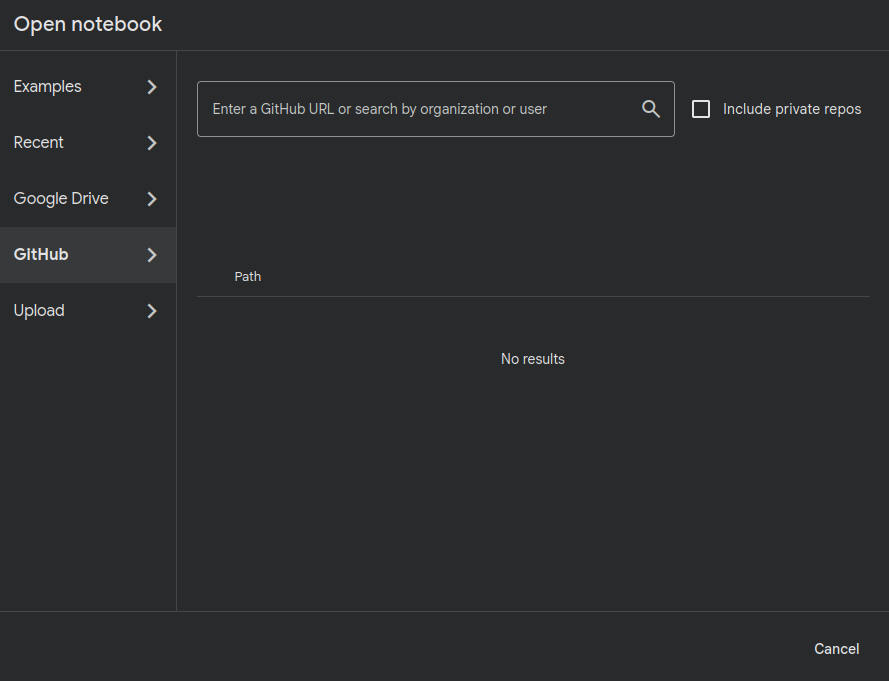
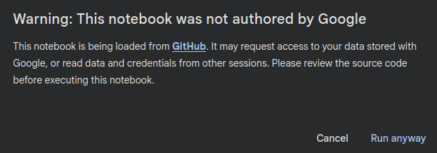

Tutorial para a execução dos notebooks no Google Colab
- Abra o Colab https://colab.research.google.com/ com a sua conta do Google.
- Selecione a opção “Upload Notebook” e depois “GitHub”.
- Na caixa de texto cole o link para o notebook que está no repositório do GitHub: https://github.com/giovana-morais/ciencia_de_dados_responsavel/blob/main/encontro_1/ENEM_impacto_das_escolhas.ipynb.
- Em algum momento da execução do notebook, talvez a mensagem abaixo apareça. Não se preocupe, não estamos tentando roubar seus dados!! Vamos baixar o dataset de uma pasta compartilhada no Google Drive.
- Execute apenas as células do notebook que estão na sessão 0.2 - Rodar no Colab para baixar os dados.
- Fim! Para executar os notebooks das próximas aulas no Colab, basta acessar o notebook no repositório do curso (https://github.com/giovana-morais/ciencia_de_dados_responsavel) e copiar o link da página.
- Se você quiser suas modificações no notebook, terá que fazer isso manualmente. O novo arquivo pode ser salvo localmente, no Drive ou no GitHub.

